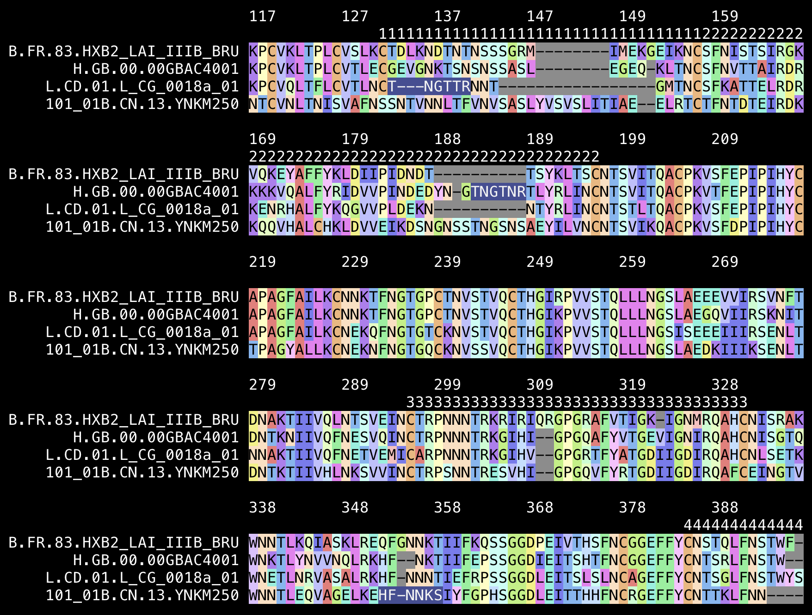
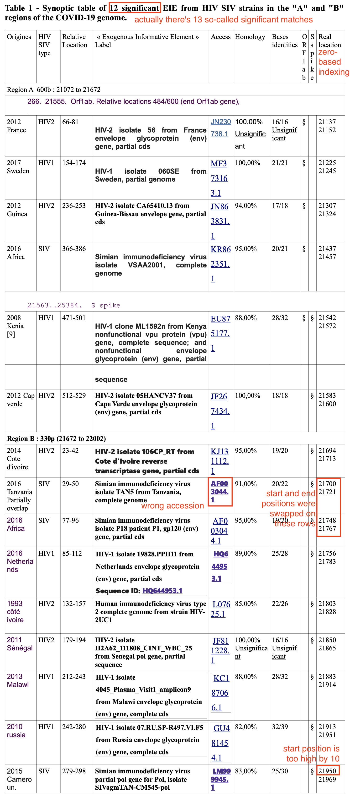
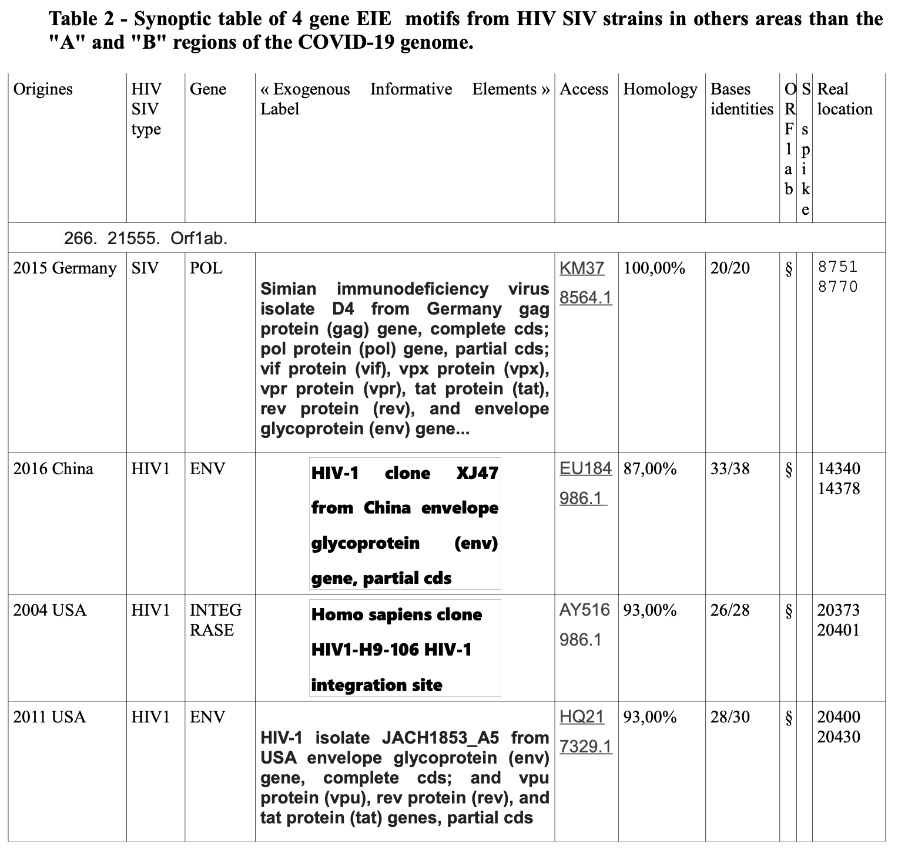
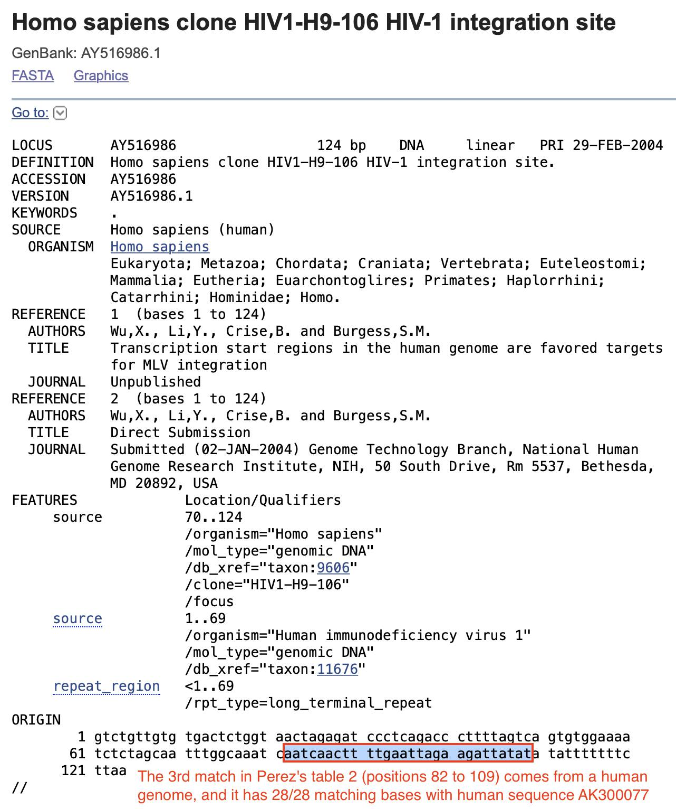

Pradhan et al. did a pairwise alignment of the spike protein of SARS2 against SARS1, and they identified 4 regions where SARS2 had an insert relative to SARS1: [https://www.researchgate.net/publication/338957445_Uncanny_similarity_of_unique_inserts_in_the_2019-nCoV_spike_protein_to_HIV-1_gp120_and_Gag]
When Pradhan et al. did BLAST searches for the inserts and the surrounding amino acids, they found that for example the last 6 aa of the first 7-aa insert had a perfect match to an HIV sequence from Thailand, and the last 2 aa of the second insert along with the next 4 aa had a perfect match to an HIV sequence from Kenya:

I tried searching for the first 7-aa insert in protein BLAST: https://blast.ncbi.nlm.nih.gov/Blast.cgi?PROGRAM=blastp&PAGE_TYPE=BlastSearch. I entered GTNGTKR to the text field at the top, I set the database to refseq_protein, I set the organism as "Viruses (taxid:10239)", and I clicked BLAST.
There were many different bacteriopages and a few non-phage viruses which matched 6 out of 7 aa so that one aa at either end was clipped by the local alignment, so that there was 100% identity but 85% query coverage:

HIV-1 was not included in the results above, because I searched in a database which only contained refseq proteins. The standard reference genome of HIV-1 is called HXB2, and its envelope protein matches only 3 out of 7 aa of Pradhan's first insert:
$ curl 'https://eutils.ncbi.nlm.nih.gov/entrez/eutils/efetch.fcgi?db=nuccore&rettype=fasta_cds_aa&id=NC_001802'>hiv.aa $ seqkit locate -p GTNGTKR -m3 <(seqkit grep -nrp gene=env hiv.aa)|cut -f3,5-|column -t # no matches for max mismatch 3 pattern start end matched $ seqkit locate -p GTNGTKR -m4 <(seqkit grep -nrp gene=env hiv.aa)|cut -f3,5-|column -t # 7 matches for max mismatch 4 pattern start end matched GTNGTKR 232 238 TFNGTGP GTNGTKR 300 306 NNNTRKR GTNGTKR 321 327 GKIGNMR GTNGTKR 354 360 GNNKTII GTNGTKR 404 410 GSNNTEG GTNGTKR 495 501 GVAPTKA GTNGTKR 822 828 VAEGTDR
Next I tried doing another BLAST search for Pradhan's first insert, but I set the "Non-redundant protein sequences (nr)" database and I set the organism to HIV-1. There were 3 different spots of the envelope protein which all matched 6/7 aa of the insert so that one aa at either end was cut off:

There's more than a million sequences of HIV-1 in GenBank: https://www.ncbi.nlm.nih.gov/nuccore/?term=%22Human+immunodeficiency+virus+1%22%5Bporgn%3A%5f%5ftxid11676%5D. I don't know how many of them are included at BLAST, but in any case it's not that unusual that a handful of sequences would randomly happen to match 6 out of 7 aa of Pradhan's first insert.
The env protein of HIV is divided into the gp120 and gp41 polyproteins, but Pradhan et al.'s first insert matched the gp120 part. I downloaded 125,046 gp120 sequences from the HIV sequence database of the Los Alamos National Laboratory: https://www.hiv.lanl.gov/components/sequence/HIV/search/search.html. None of them matched the full GTNGTKR insert, but there were 15 sequences that matched the first 6 aa and there were 12 sequences which matched the last 6 aa, and the matches were at 3 different spots:
$ seqkit stat HIV-1_env.fasta|column -t file format type num_seqs sum_len min_len avg_len max_len HIV-1_env.fasta FASTA Protein 125,046 105,184,828 479 841.2 1,469 $ seqkit locate -p GTNGTK HIV-1_env.fasta|cut -f1,5-7|column -t seqID start end matched C.IN.-.VB49.EF694035 135 140 GTNGTK C.ZA.2009.CAP177_39mo_30.KC833437 452 457 GTNGTK C.ZA.2009.CAP177_4260_186wpi_plasma_12.MK205618 452 457 GTNGTK C.ZA.2009.CAP177_4260_186wpi_cvl_73.MK205633 452 457 GTNGTK B.US.1990.1580m.11a.MT861903 136 141 GTNGTK B.US.1990.1580m.13s.MT861906 136 141 GTNGTK B.US.1990.1580m.15.MT861908 136 141 GTNGTK B.US.1990.1580m.16a.MT861910 136 141 GTNGTK B.US.1990.1580m.17.MT861911 136 141 GTNGTK B.US.1990.1580m.18.MT861913 136 141 GTNGTK B.US.1990.1580m.22.MT861919 136 141 GTNGTK B.US.1990.1580m.3a.MT861922 136 141 GTNGTK B.US.1990.1580m.5.MT861925 136 141 GTNGTK B.US.1990.1580m.7.MT861927 136 141 GTNGTK A1CD.TZ.2012.30196v23_env12.OM825465 460 465 GTNGTK $ seqkit locate -p TNGTKR HIV-1_env.fasta|cut -f1,5-7|column -t seqID start end matched 01_AE.TH.2006.AA042a12R.JX447199 364 369 TNGTKR 01_AE.TH.2006.AA042a13R.JX447200 399 404 TNGTKR 01_AE.TH.2006.AA042a09R.JX447201 398 403 TNGTKR 01_AE.TH.2006.AA042a08R.JX447202 398 403 TNGTKR 01_AE.TH.2006.AA042a10R.JX447203 404 409 TNGTKR 01_AE.TH.2006.AA042a11R.JX447204 404 409 TNGTKR 01_AE.TH.2006.AA042a02R.JX447205 398 403 TNGTKR 01_AE.TH.2006.AA042a05R.JX447206 398 403 TNGTKR 01_AE.TH.2006.AA042a07R.JX447207 398 403 TNGTKR 01_AE.TH.2006.AA042a03R.JX447208 399 404 TNGTKR 01_AE.TH.2006.AA042a06R.JX447209 404 409 TNGTKR 01_AE.TH.2007.AA042d_ENV24.MZ347079 408 413 TNGTKR
So again it's not that unusual that 29 out of over a 100,000 sequences would happen to match 6 out of 7 aa. The reason why all four of Pradhan's inserts happened to match HIV and not some other virus might simply be that BLAST has a very large number of HIV sequences relative to other viruses.
Pradhan's second so-called insert matches the last 2 aa of the YYHK insert here and the next 4 aa:

But there's a total of 7 possible 6 aa segments which include at least 2 aa of the 4 aa insert, so again it's not that surprising that one of them would happen to match one out of hundreds of thousands or millions of HIV sequences at BLAST. The gp120 sequences I downloaded had a perfect match for only one out of the 7 segments:
$ x=FLGVYYHKNNKS;for i in {0..6};do seqkit locate -ip ${x:i:6} HIV-1_env.fasta;done
seqID patternName pattern strand start end matched
seqID patternName pattern strand start end matched
seqID patternName pattern strand start end matched
seqID patternName pattern strand start end matched
seqID patternName pattern strand start end matched
seqID patternName pattern strand start end matched
seqID patternName pattern strand start end matched
G.KE.2006.06KE275457V6.KT022379 HKNNKS hknnks + 462 467 hknnks
I also tried downloading all protein sequences of influenza A from the NCBI's influenza virus database. I simply kept the default settings here and clicked "add query": https://www.ncbi.nlm.nih.gov/genomes/FLU/Database/nph-select.cgi#mainform. There were a bit over a million sequences:
$ seqkit stat influenzamega.fa file format type num_seqs sum_len min_len avg_len max_len influenzamega.fa FASTA Protein 1,234,340 497,828,616 1 403.3 775
The spike protein of Wuhan-Hu-1 is 1273 aa long so it has 1268 possible 6 aa subsegments. However 269 of them had an exact match to one or more of the protein sequences of influenza A:
$ curl 'https://eutils.ncbi.nlm.nih.gov/entrez/eutils/efetch.fcgi?db=nuccore&rettype=fasta_cds_aa&id=MN908947'|seqkit grep -nrp gene=S>sars2spike.aa
$ seqkit seq -s sars2spike.aa|awk '{for(i=1;i<length-5;i++)print substr($0,i,6)}'>kmer
$ grep -f kmer <(seqkit seq -s influenzamega.fa)>temp
$ for x in `<kmer`;do grep -m1 $l temp;done|wc -l
269
And in a FASTA file with 125,046 gp120 sequences of HIV, 53 out of 1268 6-mers had a perfect match (but the number would've been bigger if I was looking at all proteins of HIV and not just gp120):
$ grep -fkmer <(seqkit seq -s HIV-1_env.fasta)>temp2 $ for x in `<kmer`;do grep -m1 $x temp2;done|wc -l 53
Pradhan's first insert was GTNGTKR, but Wuhan-Hu-1 only has one or 2 inserted aa in that region relative to European and African sarbecoviruses, so it rather looks like SARS1 has deletions in that region. The TKR at the end of the first so-called insert is also matched by ZC45 and RpYN06:

In Pradhan's pairwise alignment SARS2 had the insert YYHK relative to Tor2. Pradhan's second so-called insert was HKNNKS, which consisted of the last two aa of YYHK and the next 4 aa. However the YYHKNNK without the K in the middle is also included in ZC45 and ZXC21 (so it's weird that Pradhan didn't mention them since they were the closest published relatives of SARS2 in January 2020):

Also from my alignment above it looks that relative to SARS1, SARS2 has the deletion SK and the insertion MESEFR. Pradhan et al. identified the locations of their inserts by doing a pairwise alignment of SARS2 and SARS1, but they would've been able to identify the locations more accurately if they would've done a multiple sequence alignment that also included other sarbecoviruses. Trevor Bedford also pointed out that the YYHK wasn't really even an insert relative to other sarbecoviruses, but from his alignment it looks like SARS2 has the insertion SEFR relative to SARS1: [https://twitter.com/trvrb/status/1223667730911354880]

The third insert that was highlighted in Pradhan's alignment consisted of the amino acids SSG, even though a bit before it there was another 3 aa insert that was not highlighted. But the third insert might have been placed in the wrong spot because Pradhan et al. only did a pairwise alignment of SARS2 and SARS1. When I did an alignment of more viruses, I got a single 6 aa insert in SARS2 relative to SARS1 instead of two different 3 aa inserts. And my alignment also shows that the G at the end of SSG is also included in ZC45 and RpYN06 (and the middle S in SSG is even included in European and African sarbecoviruses, even though it might be a coincidence):

The insert between inserts 2 and 3 that wasn't highlighted by Pradhan consisted of the amino acids LHR. When I tried searching for the insert and the surrounding amino acids on BLAST, I found that the LHR and the next 4 amino acids were matched by a bacteriophage from the class Caudoviricetes (so it's even better than Pradhan's first two inserts which only matched 6 amino acids):

Pradhan's fourth insert consisted of QTNS followed by 11 aa with no match in SARS2 followed by PRRA, which was found in a single random subtype B sequence of HIV from India. But if the designers of SARS2 were inspired to borrow the PRRA motif from HIV, how did they know to look at a random HIV sequence from India out of hundreds of thousands of published sequences? Here the Indian sequence is compared to the HXB2 refseq, which contains QVTNS instead of QTNS, but which only matches 1 out of 4 aa of the PRRA:
$ curl 'https://eutils.ncbi.nlm.nih.gov/entrez/eutils/efetch.fcgi?db=protein&rettype=fasta&id=AKR75206,NP_057850'|mafft --clustalout -
[...]
AKR75206.1 RVLAEAMSQ-TNS-SILMQRSNFKGPRRAVKCFNCGREGHIAKNCRAPRKKGCWKCGKEG
NP_057850.1 RVLAEAMSQVTNSATIMMQRGNFRNQRKIVKCFNCGKEGHTARNCRAPRKKGCWKCGKEG
********* *** :*:***.**:. *: *******:*** *:*****************
^^^^^^^^^^^^^^^^^^^^^
Pradhan insert 4
[...]
Here's code for making the colorized amino acid alignments:
# download whole genome sequences of sarbecoviruses
curl -sL sars2.net/f/sarbe.fa.xz|xz -dc>sarbe.fa
# efetch multi
emu()(curl -sd "id=$(paste -sd,)" "https://eutils.ncbi.nlm.nih.gov/entrez/eutils/efetch.fcgi?db=${1:-nuccore}&rettype=${2:-fasta}&retmode=$3")
# download spike protein sequences of sarbecoviruses and rename them to have same the defline as full sequences
seqkit seq -ni sarbe.fa|emu '' fasta_cds_aa|seqkit grep -nrp gene=S,spike,surface|sed 's/_prot_.*//;s/lcl|//'|seqkit fx2tab|awk -F\\t 'NR==FNR{a[$1]=$2;next}{print">"$1" "a[$1]"\n"$2}' <(seqkit seq -n sarbe.fa|sed $'s/ /\t/') ->spike.aa
# make a TSV matrix for percentage identity between spike protein sequences
aln()(\mafft --thread 3 --quiet "${@--}")
curl -Ls sars2.net/f/pid.cpp>pid.cpp;g++ pid.cpp -O3 -o pid
seqkit replace -isp '[^X]' -r '' spike.aa|seqkit seq -m 5|seqkit seq -ni|seqkit grep -vf- spike.aa|aln|./pid>spike.pid
# thin out a TSV percentage identity matrix by removing rows with over n% identity to any previous row (default 99%)
thin()(awk -F\\t 'NR>1{for(i=2;i<NR;i++)if($i>x)next;print$1}' x="${1-99}" "${@:2}")
# print color scheme
aacolor()(printf %s\\n A:242:121:121 C:242:182:121 D:242:242:121 G:182:242:121 F:121:242:151 E:121:242:222 T:121:182:242 I:121:121:242 K:182:121:242 L:242:121:242 M:255:191:191 N:255:223:191 P:255:255:191 Q:223:255:191 R:191:255:207 S:191:255:244 H:191:223:255 V:191:191:255 W:223:191:255 Y:255:191:255 -:140:140:140 X:255:255:255 \*:255:255:255|tr : \ )
# display alignment with colorized amino acids
seqcol()(seqkit seq -u|seqkit fx2tab|gawk -F\\t 'NR==FNR{a[$1]=$2;next}{name[FNR]=$1;split($2,z,"");for(i in z)seq[FNR][i]=z[i];if(length($1)>max1)max1=length($1);if(length($2)>max2)max2=length($2)}END{for(i=1;i<=max2;i+=width){printf("%"(max1+1)"s","");for(pos=i;pos<i+width&&pos<=max2;pos+=10)printf(pos-i>width-10?"%s":"%-10s",pos);print"";for(j in seq){printf("%"max1"s ",name[j]);for(k=i;k<=max2&&k<i+width;k++)printf("%s","\033[38;2;0;0;0m\033[48;2;"a[seq[j][k]]"m"seq[j][k]"\033[0m");print""}}}' "width=${1-60}" <(aacolor|sed $'s/ /\t/;s/ /;/g') -)
thin 92 <spike.pid|cut -d\ -f1|seqkit grep -f- spike.aa|seqkit grep -nrvp 'SARS coronavirus'|cat - <(seqkit grep -nrip db159,hu-1,tor2,zc45,rp3\\b,rs7896,banal-20-52,ratg,lyra11,btsy2,shc014,wiv1\\b,gx_p2v,gx-p1e spike.aa)|seqkit rmdup -s|aln --reorder -|cut -d, -f1|sed 's/>[^ ]*/>/;s/ ORF.*//;s/ surface .*//;s/Severe acute respiratory syndrome/SARS/;s/Khosta-2 strain //;s/ isolate / /;s/ strain / /;s/Bat SARS-like coronavirus //;s/Betacoronavirus sp. //;s/ RNA$//'|seqcol
Arkmedic tried to do a BLAST search for the nucleotide sequence of Pradhan's first insert, but he used the coding sequence of the insert in SARS2 and not HIV. He searched for only viruses published in 2019 or earlier, so many of the top matches were sequences of HIV: [https://www.arkmedic.info/p/absolute-proof-the-gp-120-sequences]

However his top matches got only 83% query coverage because they only matched 15 out of 18 bases, similar to my matches here:

The first match above was missing the first 3 bases of the query and the second match was missing the first base, but both matches were still in frame so that the first match coded for 5 out of 6 aa of TNGTKR and the second match coded for 4 out of 6 aa:
$ emu protein fasta_cds_na<<<AVN55366|seqkit translate|seqkit subseq -r 400:409 >lcl|MH012801.1_cds_AVN55366.1_1 [gene=env] [protein=envelope glycoprotein] [protein_id=AVN55366.1] [location=1..2577] [gbkey=CDS] WENGTKRSNE $ emu '' fasta_cds_na<<<JX071072|seqkit translate|seqkit subseq -r 259:266 >lcl|JX071072.1_cds_AFV81607.1_1 [gene=env] [protein=envelope glycoprotein] [protein_id=AFV81607.1] [location=<1..>1116] [gbkey=CDS] NPNGTKIY
The main text of Pradhan's paper doesn't include the accession numbers of the HIV sequences which matched their inserts, but you have to dig them up from the supplementary Excel file which was only posted at bioRxiv but not ResearchGate: https://www.biorxiv.org/content/10.1101/2020.01.30.927871v1.supplementary-material?versioned=true. It shows that the first insert was matched by 10 different sequences from Thailand:
| country | accession | subtype | insert |
|---|---|---|---|
| Thailand | AFU28737.1 | CRF01_AE | Insert 1 |
| Thailand | AFU28711.1 | CRF01_AE | Insert 1 |
| Thailand | AFU28717.1 | CRF01_AE | Insert 1 |
| Thailand | AFU28733.1 | CRF01_AE | Insert 1 |
| Thailand | AFU28693.1 | CRF01_AE | Insert 1 |
| Thailand | AFU28721.1 | CRF01_AE | Insert 1 |
| Thailand | AFU28699.1 | CRF01_AE | Insert 1 |
| Thailand | AFU28729.1 | CRF01_AE | Insert 1 |
| Thailand | AFU28705.1 | CRF01_AE | Insert 1 |
| Thailand | AFU28725.1 | CRF01_AE | Insert 1 |
| Kenya | ALB06757.1 | G | Insert 2 |
| India | ACL98861.1 | C | Insert 3 |
| India | ACL98864.1 | C | Insert 3 |
| India | ACL98860.1 | C | Insert 3 |
| India | ACL98859.1 | C | Insert 3 |
| India | AKR75206.1 | C | Insert 4 |
However in all Thai sequences the first insert was coded by ACA AAT GGA ACC AAG AGG, so it's actually 3 bases different from the nucleotide sequence in Wuhan-Hu-1 that was used by Arkmedic (ACC AAT GGT ACT AAG AGG):
$ emu()(curl -sd "id=$(paste -sd,)" "https://eutils.ncbi.nlm.nih.gov/entrez/eutils/efetch.fcgi?db=${1:-nuccore}&rettype=${2:-fasta}&retmode=$3")
$ emu protein fasta_cds_na<<<AFU28737,AFU28711,AFU28717,AFU28733,AFU28693,AFU28721,AFU28699,AFU28729,AFU28705,AFU28725 >insert1.fa
$ seqkit translate insert1.fa|seqkit locate -p TNGTKR|sed 1d|cut -f1,5|while read l m;do seqkit grep -p $l insert1.fa|seqkit subseq -r $[m*3-2]:$[m*3-2+17];done|seqkit seq -s|sort -u|sed 's/.../& /g'
ACA AAT GGA ACC AAG AGG
There were about 3.2 million results at GenBank when I searched for 0:2019[dp] viruses[organism], but about 0.9 million or about 27% of the results were classified under HIV-1. [https://www.ncbi.nlm.nih.gov/nuccore/?term=0%3A2019%5Bdp%5D+viruses%5Borganism%5D] So the reason why many of Arkmedic's top hits at BLAST were sequences of HIV-1 might be because before 2020 HIV-1 was the species of virus with the most sequences at GenBank:

Arkmedic also wrote that he didn't find any 100% match when he searched for the nucleotide sequence of Pradhan's second insert on BLAST, but that's because he again used the nucleotide sequence in Wuhan-Hu-1 (CAC AAA AAC AAC AAA AGT), which is 3 bases different from Pradhan's HIV sequences:
$ emu protein fasta_cds_na<<<ALB06757 >insert2.fa $ x=$(seqkit translate insert2.fa|seqkit locate -p HKNNKS|sed 1d|cut -f5);seqkit subseq -r $[x*3-2]:$[(x+5)*3] insert2.fa|seqkit seq -s|sed 's/.../& /g' CAT AAA AAT AAT AAA AGT
When I did a BLAST search for the nucleotide sequence in HIV, it had 18/18 matching bases only with Pradhan's Kenyan HIV-1 sequence and with some other random virus where the match was on the minus strand (but in the screenshot below the other results with 100% identity and 100% query coverage were noncontiguous matches where the match was split into two different segments, as you can see from the max score being lower than on the first two rows):

Arkmedic also pointed out that he found no matches for Pradhan's third insert on BLAST, but that's because he searched for the region around the insert in SARS2 and not HIV (RSYLTPGDSSSG and not RTYLFNETRGNSSSG). The nucleotide sequence of the version in HIV is found in all 4 HIV sequences that were listed in Pradhan's supplementary Excel file:
$ emu protein fasta_cds_na<<<ACL98861,ACL98864,ACL98860,ACL98859 >insert3.fa
$ x=RTYLFNETRGNSSSG;seqkit translate insert3.fa|seqkit locate -p $x|sed 1d|cut -f1,5|while read l m;do seqkit grep -p $l insert3.fa|seqkit subseq -r $[m*3-2]:$[(m+${#x})*3];done|seqkit seq -s|sort -u|sed 's/.../& /g'
AGG ACA TAC CTG TTT AAT GAG ACA AGA GGT AAT TCA AGC TCA GGT AAT

Arkmedic wrote: "TLDR: In order to get the 3 inserts of Gp-120 to exist in SARS-Cov-2, the genomic sequences that coded for them had to have got there by recombination from another organism or in a lab. Because they don't exist anywhere in nature it is not possible to have come from another organism."
However as I showed in the previous section, Pradhan's first insert actually looks like a deletion in SARS1 and not an insertion in SARS2. And Pradhan's second and third inserts were placed at the wrong spot because he only did a pairwise alignment of SARS1 and SARS2 and he didn't include more sarbecoviruses in his alignment.
Arkmedic was also wrong that the inserts "don't exist anywhere in nature", because the first two segments shown in Pradhan's table are only 6 aa long, so if you do a BLAST search for their nucleotide sequences of the segments from Wuhan-Hu-1, there's perfect matches in many other organisms but just not in other viruses, like for example this shows perfect matches for the second segment:

From the HIV sequence database of the Los Alamos National Laboratory, you can download a FASTA file which contains 2-5 sequences from different subtypes of HIV-1 along with 27 chimpanzee and gorilla sequences of SIV that are similar to HIV-1. Set "Alignment type" to "Web (all complete sequences)", set "DNA/Protein" to "Protein", and click "Get alignment": https://www.hiv.lanl.gov/content/sequence/NEWALIGN/align.html. You can keep region as "env" to download only the envelope protein, which covers about 20% of the genome of HIV-1.
The 2023 edition of LANL's subtype reference has a total of 555 sequences, but zero of them have a perfect match to Pradhan's first motif TNGTKR. Two sequences have one mismatch, 215 have 2 mismatches, and the rest have 3 mismatches:
$ wget sars2.net/f/HIV1_REF_2023_env_DNA.fasta
$ x=TNGTKR;for((i=0;i<=${#x};i++));do seqkit seq -g HIV1_REF_2023_env_PRO.fasta|seqkit replace -sp \# -r X|seqkit locate -iPp $x -m$i|sed 1d|awk '!a[$1]++'|echo "$i `wc -l`";done
0 0
1 2
2 215
3 555
4 555
5 555
6 555
For the second motif HKNNKS, there's zero perfect matches and only sequence with a single mismatch:
$ x=HKNNKS;for((i=0;i<=${#x};i++));do seqkit seq -g HIV1_REF_2023_env_PRO.fasta|seqkit replace -sp \# -r X|seqkit locate -iPp $x -m$i|sed 1d|awk '!a[$1]++'|echo "$i `wc -l`";done
0 0
1 1
2 41
3 551
4 555
5 555
6 555
All of the matches with one mismatch were located in the first half of gp120:
$ seqkit seq -g HIV1_REF_2023_env_PRO.fasta|seqkit replace -sp\# -rX|seqkit locate -ip TNGTKR -m1|cut -f1,3,5-|column -t seqID pattern start end matched Ref.H.GB.00.00GBAC4001.FJ711703 tngtkr 190 195 tngtnr Ref.L.CD.01.L_CG_0018a_01.MN271384 tngtkr 132 137 tngttr $ seqkit seq -g HIV1_REF_2023_env_PRO.fasta|seqkit replace -sp\# -rX|seqkit locate -ip HKNNKS -m1|cut -f1,3,5-|column -t seqID pattern start end matched Ref.101_01B.CN.13.YNKM250.MK158946 hknnks 366 371 hfnnks
The two matches to TNGTKR were both located within variable loops but the match to HKNNKS wasn't:
seqkit grep -nrp FJ711703,MN271384,YNKM250,HXB2 HIV1_REF_2023_env_PRO.fasta|seqkit replace -p'^Ref\.(.*)\..*?$' -r\$1|mafft --quiet -|seqkit fx2tab|gawk -F\\t 'ARGIND==1{a[$1]=$2}ARGIND==2{for(i=$2;i<=$3;i++)loop[i]=$1}ARGIND==3{if($1~/HXB2/){gap=0;split($2,z,"");for(i in z){if(z[i]=="-")gap++;gaps[i]=gap}}name[FNR]=$1;split($2,z,"");for(i in z)seq[FNR][i]=z[i];if(length($1)>max1)max1=length($1);if(length($2)>max2)max2=length($2)}END{width=60;for(i=1;i<=max2;i+=width){print"";printf("%*s",max1+1,"");for(pos=i;pos<i+width&&pos<=max2;pos+=10)printf(pos-i>width-10?"%s":"%-10s",pos-gaps[pos]);print"";printf("%*s",max1+1,"");for(pos=i;pos<i+width;pos++){l=loop[pos-gaps[pos]];printf"%s",l?l:" "};print"";for(j in seq){printf("%"max1"s ",name[j]);for(k=i;k<=max2&&k<i+width;k++)printf("%s","\033[38;2;0;0;0m\033[48;2;"a[seq[j][k]in a?seq[j][k]:"X"]"m"seq[j][k]"\033[0m");print""}}}' <(aacolor|sed $'s/ /\t/;s/ /;/g') <(printf %s\\n 1:131:157 2:158:196 3:296:331 4:385:418 5:460:469|tr : \\t) -

The numbers in the image above show the position in HXB2. I used these as the coordinates of the variable loops in the env protein of HXB2:
loop start end V1 131 157 V2 158 196 V3 296 331 V4 385 418 V5 460 469
In May 2020 Jean-Claude Perez and Luc Montagnier published a preprint at Researchgate titled "COVID-19, SARS and Bats Coronaviruses Genomes Unexpected Exogenous RNA Sequences". [https://www.researchgate.net/publication/341756383_COVID-19_SARS_and_Bats_Coronaviruses_Genomes_Unexpected_Exogenous_RNA_Sequences]
They didn't use Wuhan-Hu-1 as their reference genome but another early sequence from the Wuhan outbreak. [https://www.ncbi.nlm.nih.gov/nucleotide/LR757998.1] It's missing the first 25 bases of the 5' UTR relative to Wuhan-Hu-1, so the genome coordinates given by Perez are off by 25 relative to Wuhan-Hu-1 coordinates.
The authors identified two contiguous regions with a high number of matches to HIV or SIV sequences, which they called "region A" and "region B". They indicated that region A was 600 bases long but it matched bases 21072 to 21672 of the reference, which would mean that it would be 601 bases long if both ends of the range would be inclusive, but the end of the range appears to be exclusive and the authors appear to have started genome numbering from zero and not one, so the region actually matches bases 21073 to 21672 in regular one-based numbering where both ends of the range are inclusive:
$ emu()(curl -sd "id=$(paste -sd,)" "https://eutils.ncbi.nlm.nih.gov/entrez/eutils/efetch.fcgi?db=${1:-nuccore}&rettype=${2:-fasta}&retmode=$3")
$ emu<<<LR757998>perezref.fa
$ seqkit locate -pAGGGTTTTTTCACTTACATTTGTGGGTTTATACAACAAAAGCTAGCTCTTGGAGGTTCCGTGGCTATAAAGATAACAGAACATTCTTGGAATGCTGATCTTTATAAGCTCATGGGACACTTCGCATGGTGGACAGCCTTTGTTACTAATGTGAATGCGTCATCATCTGAAGCATTTTTAATTGGATGTAATTATCTTGGCAAACCACGCGAACAAATAGATGGTTATGTCATGCATGCAAATTACATATTTTGGAGGAATACAAATCCAATTCAGTTGTCTTCCTATTCTTTATTTGACATGAGTAAATTTCCCCTTAAATTAAGGGGTACTGCTGTTATGTCTTTAAAAGAAGGTCAAATCAATGATATGATTTTATCTCTTCTTAGTAAAGGTAGACTTATAATTAGAGAAAACAACAGAGTTGTTATTTCTAGTGATGTTCTTGTTAACAACTAAACGAACAATGTTTGTTTTTCTTGTTTTATTGCCACTAGTCTCTAGTCAGTGTGTTAATCTTACAACCAGAACTCAATTACCCCCTGCATACACTAATTCTTTCACACGTGGTGTTTATTACCCTGACAAAGTTTTCAGATCC perezref.fa|cut -f5,6|column -t
start end
21073 21672
Region A consists of the last 458 bases of ORF1ab, the 7-base intergenic region between ORF1ab and the spike protein, and the first 135 bases of the spike. Region B consists of bases 136 to 465 of the spike.
The paper included this table of matches to regions A and B in various sequences of HIV-1, HIV-2, and SIV:

One error in the table is that "Simian immunodeficiency virus isolate TAN5 from Tanzania" should have the accession number JN091691.1, but it was accidentally given the same accession as the sequence on the next row. The coordinates in the last two columns seem to use zero-based indexing, because for example the first row is shown to match positions 21137 to 21152, but it would be positions 21138 to 21153 in regular 1-based indexing.
When I downloaded all 15 sequences in the table, I did a BLAST search of them against the whole genome of SARS-CoV-2 and not just regions A and B, there were no matches returned when I ran BLAST with the default settings:
$ cat perez # here I converted the starting and ending positions to 1-based indexing JN230738.1 21138 21153 MF373163.1 21226 21246 JN863831.1 21308 21325 KR862351.1 21438 21458 EU875177.1 21543 21573 JF267434.1 21584 21601 KJ131112.1 21695 21714 AF003044.1 21701 21722 JN091691.1 21749 21768 HQ644953.1 21757 21784 L07625.1 21804 21829 JF811228.1 21851 21866 KC187066.1 21884 21915 GU481454.1 21914 21952 LM999945.1 21951 21970 $ curl "https://eutils.ncbi.nlm.nih.gov/entrez/eutils/efetch.fcgi?db=nuccore&rettype=fasta&id=$(cut -d\ -f1 perez|paste -sd, -)">perez.fa $ brew install blast [...] $ makeblastdb -dbtype nucl -in perez.fa [...] $ fmt='sseqid bitscore evalue nident length pident sstrand qstart qend' $ <perezref.fa blastn -db perez.fa -outfmt "6 $fmt" $ # there were no results when BLAST was ran with default parameters
So therefore in order to use less strict matching criteria, I added the option -word_size 5 which gave me one or more matches for all 15 sequences. I selected the best match for each HIV or SIV sequence by selecting the match with the highest bitscore, which is equivalent to selecting the match with the lowest E-value. But there were 5 sequences whose best match in the whole genome was not even the same match that was shown in the table by Perez:
$ <perezref.fa blastn -db perez.fa -outfmt "6 $fmt" -word_size 5|sort -rnk2|awk '!a[$1]++'|(echo $fmt perezstart perezend matchesperez;awk 'NR==FNR{a[$1]=$2" "$3;pos[$1]=NR;next}{print pos[$1],$0,a[$1]}' perez -|sort -n|cut -d\ -f2-|awk '{print$0,$8==$10&&$9==$11?"true":"false"}')|column -t
sseqid bitscore evalue nident length pident sstrand qstart qend perezstart perezend matchesperez
JN230738.1 30.7 0.93 21 23 91.304 plus 21133 21153 21138 21153 false
MF373163.1 39.9 0.002 21 21 100.000 minus 21226 21246 21226 21246 true
JN863831.1 28.8 3.4 17 18 94.444 minus 21308 21325 21308 21325 true
KR862351.1 34.4 0.072 20 21 95.238 minus 21438 21458 21438 21458 true
EU875177.1 36.2 0.020 28 32 87.500 minus 21543 21573 21543 21573 true
JF267434.1 34.4 0.072 18 18 100.000 plus 21584 21601 21584 21601 true
KJ131112.1 32.5 0.26 19 20 95.000 minus 21695 21714 21695 21714 true
AF003044.1 32.5 0.26 19 20 95.000 plus 21749 21768 21701 21722 false
JN091691.1 30.7 0.93 20 22 90.909 minus 21701 21722 21749 21768 false
HQ644953.1 36.2 0.020 25 28 89.286 plus 21757 21784 21757 21784 true
L07625.1 28.8 3.4 17 18 94.444 plus 13803 13820 21804 21829 false
JF811228.1 30.7 0.93 16 16 100.000 minus 21851 21866 21851 21866 true
KC187066.1 36.2 0.020 28 32 87.500 minus 21884 21915 21884 21915 true
GU481454.1 30.7 0.93 32 39 82.051 minus 21914 21952 21914 21952 true
LM999945.1 28.8 3.4 23 27 85.185 minus 21944 21970 21951 21970 false
However the output above shows that all of the E-values are high, so that even the lowest e-value is about 0.002, which means that there is approximately 0.2% likelihood that the match could have occured by chance. And some of the E-values are above 0.9.
The output above also shows that out of the 10 matches that are the same as in Perez's table, 8 matches are on the minus strand, which means that the matched segment won't even code for the same amino acids in SARS-CoV-2 and HIV/SIV. For example the second sequence in Perez's table matches a Swedish HIV-1 sequence from 2017. [https://www.ncbi.nlm.nih.gov/nuccore/MF373163] But it matches SARS-CoV-2 on the opposite strand so its translation is completely different:
SARS-CoV-2: HIV: ATGCGTCATCATCTGAAGCAT ATGCTTCAGATGATGACGCAT AATGCGTCATCATCTGAAGCATTT TATGCTTCAGATGATGACGCATAT N A S S S E A F Y A S D D D A Y
The paper by Perez and Montagnier also included a second table of additional matches to HIV and SIV:

However 3 out of 4 matches in the table are on the minus strand:
$ printf %s\\n 'KM378564.1 8752 8770' 'EU184986.1 14341 14378' 'AY516986.1 20374 20401' 'HQ217329.1 20401 20430'>perez2
$ cut -d\ -f1 perez2|emu>perez2.fa
$ fmt='sseqid evalue nident length pident sstrand sstart send qstart qend'
$ <perezref.fa blastn -db perez2.fa -outfmt "6 $fmt" -word_size 5|sort -gk2|awk '!a[$1]++'|(echo $fmt perezstart perezend matchesperez;awk 'NR==FNR{a[$1]=$2" "$3;pos[$1]=NR;next}{print pos[$1],$0,a[$1]}' perez2 -|sort -n|cut -d\ -f2-|awk '{print$0,$9==$11&&$10==$12?"true":"false"}')|column -t
sseqid evalue nident length pident sstrand sstart send qstart qend perezstart perezend matchesperez
KM378564.1 0.001 20 20 100.000 minus 6142 6123 8736 8755 8752 8770 false
EU184986.1 1.00e-04 31 35 88.571 minus 304 271 14344 14378 14341 14378 false
AY516986.1 1.00e-04 26 28 92.857 plus 82 109 20374 20401 20374 20401 true
HQ217329.1 2.79e-05 26 27 96.296 minus 2140 2115 20404 20430 20401 20430 false
Perez seems to have entered the wrong coordinates for the first row in his table, because the first row is shown to match positions 8751-8770 of his reference genome (i.e. 8752-8770 using one-based indexing and an inclusive end of the range). But that region of his reference genome does not actually match the HIV sequence on the first row but the region 8736-8755 in my output above does.
In the table above the lone match on the plus strand doesn't even match HIV but it matches a part of a human genome that is included in an HIV integration site sequence, where the first 69 bases come from an HIV long terminal repeat but the rest of the sequence comes from a human genome: [https://www.ncbi.nlm.nih.gov/nuccore/AY516986]
